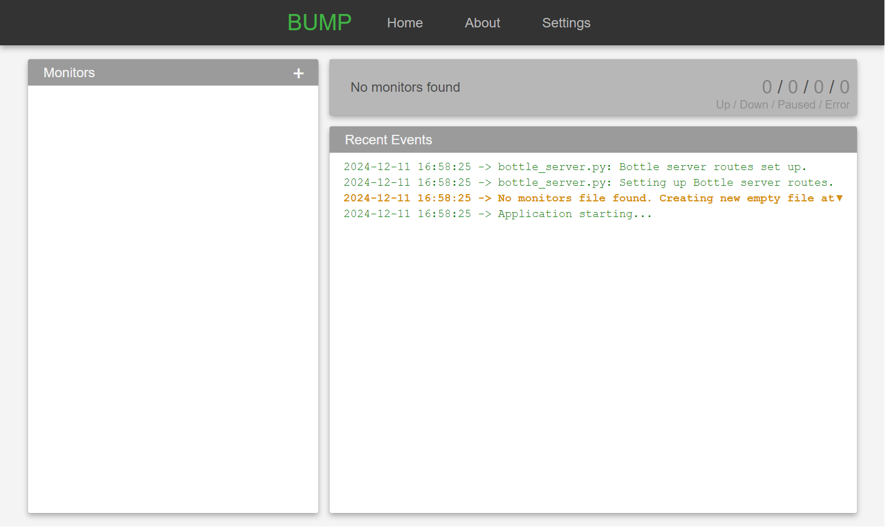
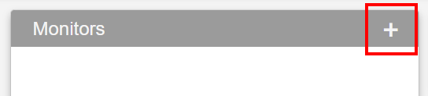

Basic Usage Guide
This guide provides a quick overview of the basic features to get your started.
Launching the Application
-
From Source:
- Navigate to the project directory.
- Start the application by running:
bash python src/app.py
-
Using the Pre-Bundled Executable:
- Double-click the executable file to launch the application.
This will open the BUMP interface in a window and add a tray icon, as the process still runs in the background when the interface is closed.

Opening the GUI
- Click the tray icon to open the GUI that allows you to add, edit and remove monitors as well as view their status and history, and change application settings.
Closing the application
- BUMP keeps running in the background even when you close the GUI.
- Right-click the system tray icon and select "Exit" to fully close the application.
Adding a Monitor
-
Create a New Monitor
- Click the "+" button on the "Monitors" card on the dashboard. 
-
Fill in the Details:
- Fill in the relevant and required fields in the "Monitor Settings" panel on the right.
- Name: Uniquely identifies the monitor and serves as the display name.
- URL: The URL of the resource you want to monitor.
- Timeout: Time (in seconds) to wait for a response from the monitored resource before considering it down.
- Interval: Seconds to wait between verifications (values smaller than the application's "Monitoring Interval" will have no additional effect)
- Query Type: The type of verification to run on the resource. For details on available conditions, see Query Types
-
Save the Monitor:
- Click "✔ Apply" to update the resource and begin monitoring.
Note that invalid configurations will prevent changes from being saved.
Viewing Monitoring Data
-
Dashboard:
- The main dashboard displays the current status of all monitored resources.
- Color codes indicate whether resources are up, down, or experiencing issues.
- The vertical bars next to a monitor in the list indicate the result of the latest queries.
-
Details Page:
- Click on a resource in the dashboard to view detailed information, including:
- Statistics.
- Timeline of results.
- Event logs.
- Click on a resource in the dashboard to view detailed information, including:
Modifying a Monitor
-
Select a Monitor:
- Click the resource you want to modify from the dashboard.
-
Click ✎ Edit:
- At the top of the right panel, click "✎ Edit"
- You will be presented with the "Monitor Settings" panel
-
Edit Settings:
- Adjust the settings as needed.
-
Save Changes:
- Click "✔ Apply" to save the changes made.
Note: You can also access the monitors configurations at "./data/monitors.json". Invalid configurations can prevent the application from launching or operating properly.
Running a Verification Manually
-
Select a Monitor:
- Click the resource you want to modify from the dashboard.
-
Click (↺ Check Now):
- At the top of the right panel, click "↺ Check Now".
-
Trigger Verification:
- This will immediately run the monitoring test for the selected resource, displaying updated results in the details panel.
Note: - This bypasses the monitor and application's interval settings.
Pausing / Unpausing a Monitor
-
Select a Monitor:
- Click the resource you want to modify from the dashboard.
-
Click "❙❙ Pause" / "⏵ Resume":
- At the top of the right panel, click "❙❙ Pause" to suspend monitoring or "⏵ Resume" to reactivate it.
Note: - Paused monitors do not execute and are not accounted for in general monitor status (e.g. they do not influence the tray icon state or the summary card on the dashboard)
Duplicating a Monitor
-
Select a Monitor:
- Click the resource you want to modify from the dashboard.
-
Click (⧉ Duplicate):
- At the top of the right panel, click "⧉ Duplicate".
-
Edit the New Monitor:
- A duplicate of the monitor will be created, and the Monitor Settings panel will open, allowing you to adjust the settings for the new resource.
Removing a Monitor
-
Select a Monitor:
- Click the resource you want to modify from the dashboard.
-
Click (✕ Delete):
- At the top of the right panel, click "✕ Delete".
-
Confirm Deletion:
- A confirmation dialog will appear. Click "Yes" to delete the monitor permanently or "No" to cancel.
- This cannot be undone.
Reviewing Logs and History
-
Logs:
- A preview of the various events is displayed on the dashboard.
- Complete logs can be found at "./logs"
- Monitor history can be found at "./data/history"
-
Timeline And Monitor Events:
- Click on a monitor from the dashboard to see its details, timeline and a preview of its log.